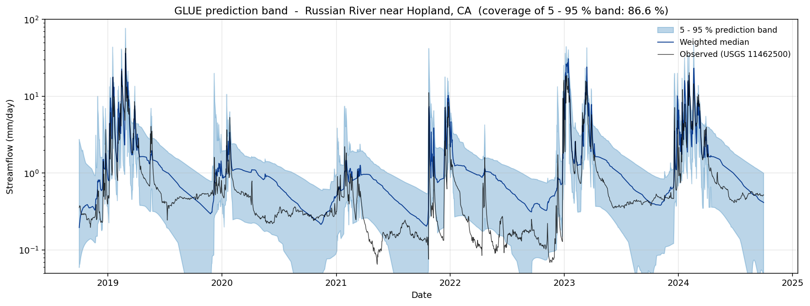
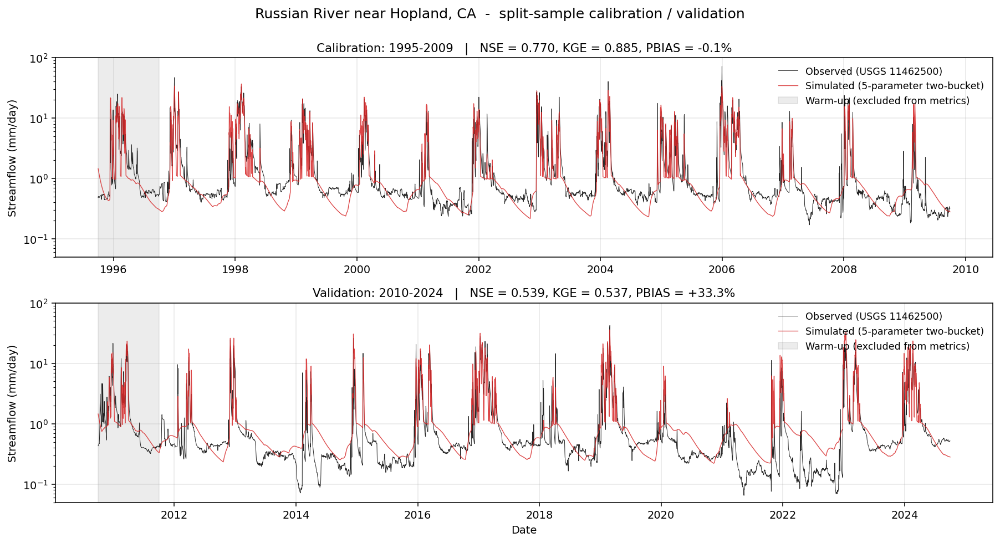
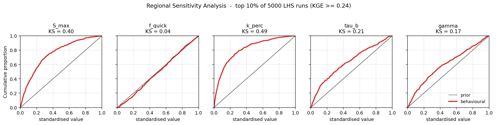
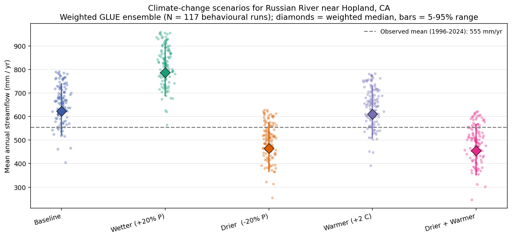

A 30-year, end-to-end Python pipeline: real USGS streamflow, ERA5 climate forcings, calibration, sensitivity, GLUE uncertainty, and climate-change scenarios — every step reproducible from one repository.

The Russian River keeps the lights on for half a million people in Sonoma and Mendocino counties, California. It also flooded twice in the past decade and emptied to a trickle during the 2020–2022 drought. Forecasting how it will behave under a warmer, drier future is a real engineering problem, not an academic exercise.
This walkthrough builds that forecast end-to-end in Python, using only free, no-auth public data. The whole pipeline runs in under six minutes on a laptop. Every artefact — code, cached data, results, figures — is in a single repository so the result is fully reproducible and any other catchment can swap in by changing two numbers.
Repository: github.com/venkatnsn/streamflow-forecasting-russian-river
By the end you will know how to:
USGS gauge 11462500 sits on the Russian River near Hopland, CA. Three numbers define the system:
The output of those three numbers — streamflow at the gauge — is what the model has to predict.
A Mediterranean climate makes this a particularly interesting test case. Winters are wet and cool (low atmospheric demand, lots of runoff). Summers are dry and hot (high atmospheric demand, baseflow only). A model that fits one season but not the other is a useless model. The split-sample test in §3 is what catches that.
Two endpoints, neither of which requires authentication or a paid subscription:
dataretrieval Python package — daily mean discharge in cubic feet per second, converted to mm/day depth equivalent over the catchment area.Reference evapotranspiration is computed via Hargreaves & Samani (1985), which needs only T_max, T_min, day-of-year and latitude.
"""Real-time daily data for any U.S. catchment, free and no-auth."""
import requests, pandas as pd
from dataretrieval import nwis
CFS_TO_M3S = 0.0283168
SECONDS_PER_DAY = 86400.0
def fetch_streamflow(site_no, start, end, area_km2):
"""USGS NWIS daily mean discharge -> mm/day (depth equivalent)."""
df, _ = nwis.get_dv(sites=site_no, parameterCd="00060", start=start, end=end)
df = df.rename(columns={"00060_Mean": "Q_cfs"})[["Q_cfs"]]
df.index = pd.to_datetime(df.index).tz_localize(None).normalize()
area_m2 = area_km2 * 1e6
df["Q_mm"] = df["Q_cfs"] * CFS_TO_M3S * SECONDS_PER_DAY / area_m2 * 1000.0
return df.reset_index().rename(columns={"index": "date"})
def fetch_meteorology(latitude, longitude, start, end, timezone="UTC"):
"""Open-Meteo Historical archive: ERA5 daily precip + Tmax + Tmin."""
r = requests.get("https://archive-api.open-meteo.com/v1/archive", params={
"latitude": latitude, "longitude": longitude,
"start_date": start, "end_date": end,
"daily": "precipitation_sum,temperature_2m_max,temperature_2m_min",
"timezone": timezone,
}, timeout=120)
r.raise_for_status()
data = r.json()["daily"]
df = pd.DataFrame(data).rename(columns={
"time": "date", "precipitation_sum": "P_mm",
"temperature_2m_max": "T_max_C", "temperature_2m_min": "T_min_C",
})
df["date"] = pd.to_datetime(df["date"])
return df
# Russian River near Hopland, CA (USGS 11462500, 937 km^2)
flow = fetch_streamflow("11462500", "1995-01-01", "2024-12-31", area_km2=937.0)
met = fetch_meteorology(38.992, -123.130, "1995-01-01", "2024-12-31",
timezone="America/Los_Angeles")
df = met.merge(flow, on="date").sort_values("date").reset_index(drop=True)
print(f"{len(df):,} matched daily records.")Gist (paste this URL alone on a line in Medium for an embedded code block): https://gist.github.com/venkatnsn/0dc1ca7c3cdc79ce2f0b8e705261f694
The merged record contains 10,958 daily rows (1995-01-01 → 2024-12-31). Mean precipitation 985 mm/yr, mean PET 1,292 mm/yr, mean streamflow 575 mm/yr — a runoff coefficient of 0.58, exactly what you would expect for a Mediterranean Pacific-coast catchment.
A conceptual lumped-parameter model with five free parameters:
P (rainfall) -> [SOIL bucket] -- ET --> atmosphere
|
saturation excess --> Q_quick (fast runoff)
|
percolation (k_perc) --> [GW bucket] -- Q_base --> stream
(1/tau_b)| Parameter | Range | Physical meaning |
|---|---|---|
S_max | 50 – 600 mm | Maximum soil moisture capacity |
f_quick | 0 – 1 | Fraction of saturation excess routed to fast runoff |
k_perc | 0.001 – 0.5 / day | Percolation rate from soil to groundwater |
tau_b | 5 – 200 days | Groundwater (baseflow) recession time constant |
gamma | 0.5 – 3 | Non-linear ET shape exponent (ET = PET · (S/S_max)^γ) |
The whole simulation loop is JIT-compiled with Numba so 5,000 30-year runs of 10,958 days complete in about 0.2 seconds on a single core, and the batch version uses prange for multi-core parallelism. This is what makes the sensitivity and GLUE analyses tractable.
"""5-parameter two-bucket rainfall-runoff model, Numba-JIT'd.
Soil bucket -> ET (atm) + saturation excess -> Quickflow + Percolation
Groundwater bucket -> Baseflow
Total streamflow Q = Quickflow + Baseflow.
Five free parameters: S_max, f_quick, k_perc, tau_b, gamma.
"""
import numpy as np
from numba import njit, prange
@njit(cache=True, fastmath=True)
def simulate(P, PET, S_max, f_quick, k_perc, tau_b, gamma,
S0_frac=0.5, G0_frac=0.1):
T = P.size
Q = np.empty(T)
S = S0_frac * S_max
G = G0_frac * S_max
for t in range(T):
S += P[t]
sat = max(0.0, min(1.0, S / S_max))
et = min(S, PET[t] * sat ** gamma)
S -= et
excess = max(0.0, S - S_max)
S -= excess
Qq = f_quick * excess
S += (1.0 - f_quick) * excess
perc = k_perc * S
S -= perc
G += perc
Qb = G / tau_b
G -= Qb
Q[t] = Qq + Qb
return Q
@njit(cache=True, parallel=True, fastmath=True)
def simulate_batch(P, PET, params, S0_frac=0.5, G0_frac=0.1):
"""params shape (N, 5): columns are [S_max, f_quick, k_perc, tau_b, gamma]."""
N = params.shape[0]
out = np.empty((N, P.size))
for i in prange(N):
out[i] = simulate(P, PET, params[i, 0], params[i, 1],
params[i, 2], params[i, 3], params[i, 4],
S0_frac, G0_frac)
return outGist (paste this URL alone on a line in Medium for an embedded code block): https://gist.github.com/venkatnsn/f27b6a8dad86a948f6a557274f360c22
The 30-year record is split in half:
Differential Evolution maximises the Kling–Gupta Efficiency (Gupta et al. 2009), which decomposes goodness-of-fit into correlation, bias, and variability terms — a more balanced metric than plain NSE for streamflow.
"""Differential Evolution against KGE, with split-sample validation."""
import numpy as np
from scipy.optimize import differential_evolution
WARMUP = 365 # days excluded from the metric
def kge(sim, obs):
"""Kling-Gupta Efficiency (Gupta et al. 2009)."""
mask = np.isfinite(sim) & np.isfinite(obs)
sim, obs = sim[mask], obs[mask]
r = np.corrcoef(sim, obs)[0, 1]
alpha = np.std(sim) / np.std(obs)
beta = np.mean(sim) / np.mean(obs)
return 1.0 - np.sqrt((r-1)**2 + (alpha-1)**2 + (beta-1)**2)
# Bounds for the 5 parameters
BOUNDS = [(50, 600), # S_max (mm)
(0.0, 1.0), # f_quick (-)
(0.001, 0.5), # k_perc (1/day)
(5, 200), # tau_b (days)
(0.5, 3.0)] # gamma (-)
def neg_kge(x, P, PET, Qobs):
Qsim = simulate(P, PET, *x) # from your model module
return -kge(Qsim[WARMUP:], Qobs[WARMUP:])
# Calibration period (water years 1996-2009)
result = differential_evolution(neg_kge, BOUNDS, args=(P_cal, PET_cal, Q_cal),
seed=42, tol=1e-6, maxiter=200)
print(f"Calibration KGE: {-result.fun:.3f}")
print(f"Optimal params: {dict(zip(['S_max','f_quick','k_perc','tau_b','gamma'], result.x))}")
# Validation on a held-out period (water years 2011-2024)
Qsim_val = simulate(P_val, PET_val, *result.x)
print(f"Validation KGE: {kge(Qsim_val[WARMUP:], Q_val[WARMUP:]):.3f}")Gist (paste this URL alone on a line in Medium for an embedded code block): https://gist.github.com/venkatnsn/f1cd8e6a8d629899fcbde18ee86d7e15
The optimised parameters and goodness-of-fit:
| Parameter | Optimum |
|---|---|
S_max | 248.0 mm |
f_quick | 0.23 |
k_perc | 0.0042 / day |
tau_b | 17.4 days |
gamma | 2.84 |
| Metric | Calibration | Validation |
|---|---|---|
| NSE | 0.770 | 0.539 |
| KGE | 0.885 | 0.537 |
| log-NSE | 0.724 | 0.518 |
| PBIAS | −0.1 % | +33.3 % |

The +33 % bias in validation is a real, honest finding — and the most important number in the whole analysis. The validation period contains the 2020–2022 California drought, which was substantially drier than anything in the calibration period. A model calibrated on 1996–2009 climate over-predicts post-2010 streamflow because the historical record it was tuned against is no longer representative.
This is non-stationarity, and it is the central problem of climate-change hydrology. No amount of better optimisation will fix it. The right responses are to use a regime-spanning calibration period whenever possible, and to put honest error bars on any forecast — which is what the next two sections do.
Two questions to answer before trusting any model:
The professional answer is Regional Sensitivity Analysis (Spear & Hornberger 1980): draw a Latin Hypercube sample over the parameter bounds, run the model for each, classify by goodness-of-fit, and compare the cumulative distribution of each parameter inside the behavioural set against the prior. A parameter whose behavioural CDF is bent away from the diagonal is sensitive. One that follows the diagonal is not.
"""Regional Sensitivity Analysis + GLUE uncertainty in one script."""
import numpy as np
from scipy.stats import qmc
# 5,000-sample Latin Hypercube over the prior parameter bounds
N = 5000
sampler = qmc.LatinHypercube(d=5, seed=2026)
u = sampler.random(N)
bounds = np.array(BOUNDS)
samples = bounds[:, 0] + u * (bounds[:, 1] - bounds[:, 0])
# Vectorised simulation, score every run
Q_all = simulate_batch(P, PET, samples)
kge_all = np.array([kge(Q_all[i, WARMUP:], Qobs[WARMUP:]) for i in range(N)])
# --- Regional Sensitivity: top 10% are behavioural -----------------------
behave = kge_all >= np.quantile(kge_all, 0.90)
ks_distance = {}
for j, name in enumerate(['S_max','f_quick','k_perc','tau_b','gamma']):
lo, hi = bounds[j]
grid = np.linspace(0, 1, 200)
s_all = np.sort((samples[:, j] - lo) / (hi - lo))
s_be = np.sort((samples[behave, j] - lo) / (hi - lo))
F_all = np.searchsorted(s_all, grid) / N
F_be = np.searchsorted(s_be, grid) / behave.sum()
ks_distance[name] = float(np.max(np.abs(F_be - F_all)))
print("Sensitivity ranking (KS distance, larger = more sensitive):")
for n, d in sorted(ks_distance.items(), key=lambda kv: -kv[1]):
print(f" {n:8s} {d:.3f}")
# --- GLUE uncertainty: behavioural ensemble + likelihood weights --------
glue_thresh = 0.5
behave = kge_all >= glue_thresh # tighter threshold
likelihood = kge_all[behave] - kge_all[behave].min()
weights = likelihood / likelihood.sum()
# Run the behavioural set on any new forcing (here: a future scenario)
Q_ensemble = simulate_batch(P_future, PET_future, samples[behave])
def weighted_quantile(values, w, q):
order = np.argsort(values)
cw = np.cumsum(w[order]) / w.sum()
return values[order][np.searchsorted(cw, q)]
q05 = np.array([weighted_quantile(Q_ensemble[:, t], weights, 0.05)
for t in range(Q_ensemble.shape[1])])
q50 = np.array([weighted_quantile(Q_ensemble[:, t], weights, 0.50)
for t in range(Q_ensemble.shape[1])])
q95 = np.array([weighted_quantile(Q_ensemble[:, t], weights, 0.95)
for t in range(Q_ensemble.shape[1])])Gist (paste this URL alone on a line in Medium for an embedded code block): https://gist.github.com/venkatnsn/58fa29514dbeb37fd4ebb58d2ee7b008
5,000 LHS runs, top 10 % behavioural set, KS distance between behavioural CDF and prior:
| Parameter | KS distance | Interpretation |
|---|---|---|
k_perc | 0.49 | Most sensitive — controls the soil-to-groundwater partition |
S_max | 0.40 | Soil-bucket size — sets the threshold for runoff generation |
tau_b | 0.21 | Baseflow recession — moderately constrained |
gamma | 0.17 | ET shape — weakly constrained |
f_quick | 0.04 | Almost unconstrained — the fast/slow split is invisible to KGE |

Two parameters dominate the behaviour of this model. The other three could be fixed at literature defaults and the fit would barely change. That is a legitimate model-reduction signal — a real-world payoff of doing the sensitivity analysis instead of skipping straight to calibration.
A single best-fit forecast is a lie of omission. Many parameter sets fit the data almost equally well — this is equifinality (Beven & Binley 1992). They will all give different forecasts under future conditions. The honest forecast is an ensemble.
GLUE — Generalised Likelihood Uncertainty Estimation:
The 5–95 % band covers 86.6 % of observed days — close to the textbook 90 % target. The ensemble is well-calibrated: when the model says "this day will fall between Q_low and Q_high with 90 % confidence," it is right about 90 % of the time.
That is what makes GLUE a defensible engineering tool. A water manager reading this band can say "I have a 90 % chance of seeing a flow between X and Y on any given day" — a far more useful statement than the deterministic "the model predicts Z."
Five scenarios applied to the 30-year forcing record. PET is recomputed from perturbed temperatures so warming consistently increases atmospheric demand.
| Scenario | P factor | ΔT (°C) | Mean Q (mm/yr) | 5 – 95 % band |
|---|---|---|---|---|
| Baseline | 1.00 | 0 | 623 | 525 – 739 |
| Wetter (+20 % P) | 1.20 | 0 | 787 | 689 – 908 |
| Drier (−20 % P) | 0.80 | 0 | 466 | 367 – 573 |
| Warmer (+2 °C) | 1.00 | +2 | 611 | 511 – 728 |
| Drier + Warmer | 0.80 | +2 | 455 | 355 – 564 |

Two findings stand out:
The same pipeline applies to any catchment, any model, any country. Change two numbers (the USGS gauge ID and the lat/lon) and re-run.
| Step | Question answered | Method |
|---|---|---|
| 1. Acquire data | What goes in? | Public APIs (USGS, Open-Meteo, BoM, IMD…) |
| 2. Build the model | What processes matter? | Conceptual reasoning + literature |
| 3. Calibrate | What parameter values fit observed data? | Differential Evolution on KGE |
| 4. Validate | Does the fit generalise? | Split-sample test |
| 5. Sensitivity | Which parameters matter? | RSA (LHS + behavioural CDFs) |
| 6. Uncertainty | How confident is the forecast? | GLUE (likelihood-weighted ensemble) |
| 7. Forecast | What does the future look like? | Ensemble run under perturbed forcings |
Master these seven steps and any environmental model becomes tractable.
The full code, data, and figures are at github.com/venkatnsn/streamflow-forecasting-russian-river. Quick start:
git clone https://github.com/venkatnsn/streamflow-forecasting-russian-river.git
cd streamflow-forecasting-russian-river
pip install -r requirements.txt
python scripts/01_fetch_data.py # download 30 years of data
python scripts/02_calibrate_validate.py # calibrate + split-sample test
python scripts/03_sensitivity.py # 5,000-run RSA
python scripts/04_glue.py # GLUE prediction band
python scripts/05_climate_scenarios.py # 5 climate scenariosA Jupyter notebook in notebooks/analysis.ipynb re-runs the pipeline as a single narrative, and METHODOLOGY.md documents every assumption.
If this article was useful, a clap and a follow help the work reach more readers. Topics worth covering next: Bayesian MCMC for environmental models, multi-catchment regionalisation, and CMIP6-driven hydrology under SSP scenarios.